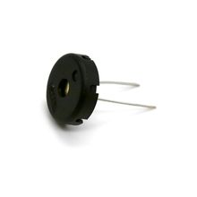

Пьезодинамик TDK PS1240P02CT3, пассивный, 4 кГц
МодулиПьезоэлектрический пассивный буззер TDK PS1240P02CT3 для звуковой индикации в электронике. Это внешне возбуждаемый излучатель: он сам не генерирует тон, а требует подачу переменного сигнала нужной частоты.
Модель PS1240P02CT3 относится к серии PS и выполнена в тонком компактном корпусе с автоматическим монтажом на ленте 12,7 мм. По каталогу TDK это пассивный piezo buzzer без встроенного генератора, поэтому частота звука задаётся внешним драйвером. Для этой позиции характерен резонанс/рабочая частота 4 кГц и звуковое давление не менее 75 дБ(A) на 10 см при возбуждении прямоугольным сигналом 3 Vp-p. Типично применяется в сигнализации, бытовой и промышленной аппаратуре, приборах и панелях управления. Изделие рассчитано на рабочий диапазон температур от −10 до +70 °C и допускает максимальное входное напряжение 30 Vp-p без DC-смещения.